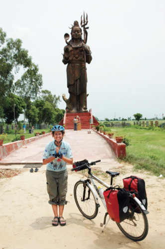
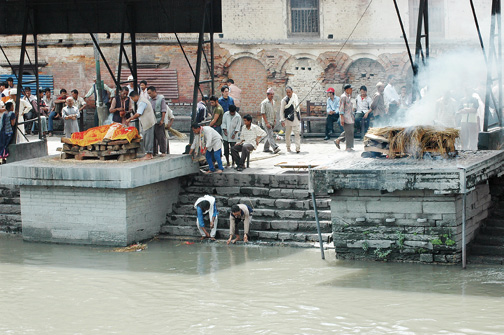

NEPAL, 26 Ağustos
Çok uzun bir aradan sonra serin bir havaya uyanıyorum. Perdeyi aralıyorum ve o da ne? Dışarısı yok. Uyku mahmurluğuyla bakınıyorum bir perde daha mı var diye. Hayır yok. Bu bembeyaz şey perde değil. Pencereyi açmamla şaşkınlığım daha da artıyor. Pencereyi açar açmaz içeriye dolmaya başlıyor beyaz sis. Katmandu’da izlediğimiz ölü yakma töreni sırasında çıkan dumanlar aklıma geliyor. Garip bir doğal çevrim içinde oradaki duman bir şekilde buraya kadar ulaşmış ve bulutlara karışmış olabilir mi acaba?
Himalayalar’ı uzaktan da olsa görmek için çıktığımız, Katmandu’nun 30 km kuzeyindeki Nagarkot’dayız ikinci defa. Çok erken saatte gün doğmadan ayakta olmamız gerekti. Tatilin son günlerini dinlenerek geçirecektik oysa. Hoş ben iki ay dinlensem ancak kendime gelirim ya.

Hindistan
Şiva’nın önünde, yerel rutine katılıyoruz.
Biraz sonra giyinip dışarı çıkacağız. Bulutlar gökyüzünü kapatmadan şansımızı denemek istiyoruz. Dağcılık malzemelerinin sudan ucuz ancak doğru yerden alınmazsa kâğıttan biraz daha sağlam olduğu Nepal’de, çok detaylı bir araştırmadan sonra, hem kaliteli hem de ucuz malzeme bulabildik. İyice giyindik kuşandık. Şimdi dört kilometrelik bir yürüyüşten sonra Himalayalar’ı görmek üzere (bu mevsimde çok zor olmasına rağmen) gözlem noktasına gideceğiz. Sisin içine doğru bakınca, bu havada imkânsız diye geçiriyorum içimden. Ama hemen kendimi engelliyorum. İmkânsız diye bir şey yok. Nepal’de çocuklardan bile duyabileceğiniz ve benim çok tuttuğum sözü tekrarlıyorum: “Think pozitif, be pozitif.” Dört ülkeyi geride bırakıp binlerce kilometre yolu bisikletle geçmedik mi? Her ülkede “torunlara anlatılacak” binbir hikaye biriktirmedik mi, birkaç gün sonra Türkiye’ye dönmüyor muyuz? Pakistan’da bizi evinde ağırlayan, otoyol komiseri Seyid ve iki küçük kızı, İran’daki dağcı dostlarımız, Pakistan’da otobüsle geçtiğimiz Taftan çölü, Hindistan’da lastik yaması yaparken çevremize toplanan meraklı insanlar, Nepal’in her daim gülümseyen yüzleri, şimdi birer düş gibi gelmiyor mu aklımıza? Hepsinden önemlisi, bu yolculuk birkaç ay önce sadece bir düşünce (think) değil miydi?
O zaman her daim “Think pozitif be pozitif.”

Nepal, Katmandu
Yaşama elveda.